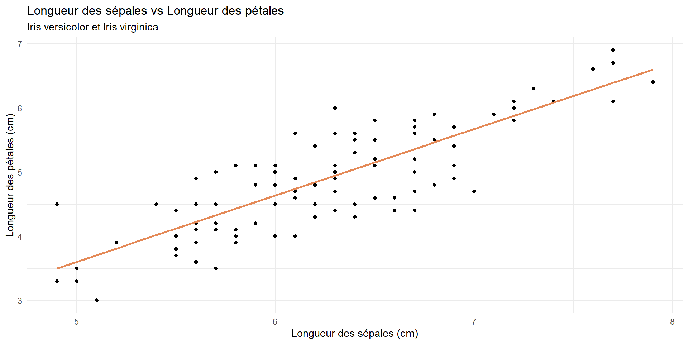
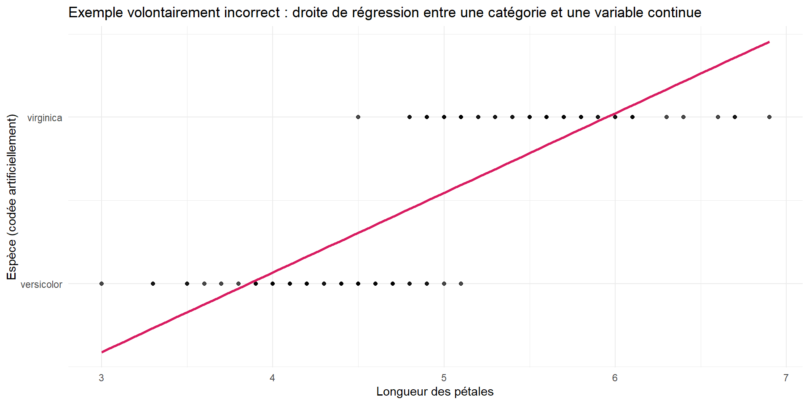
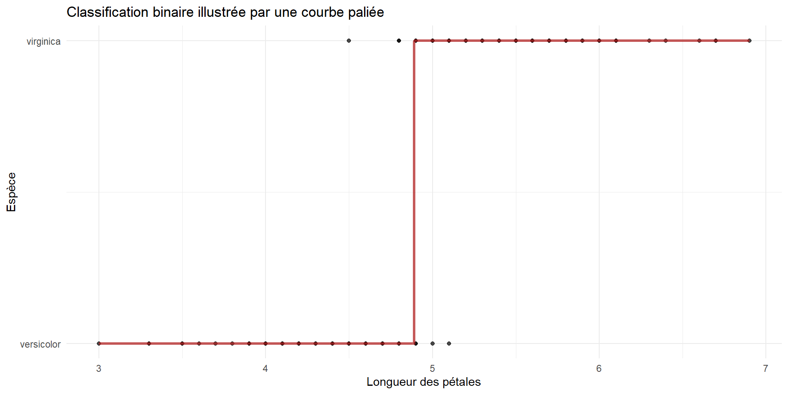
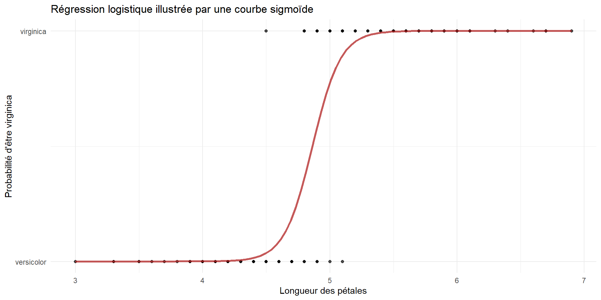
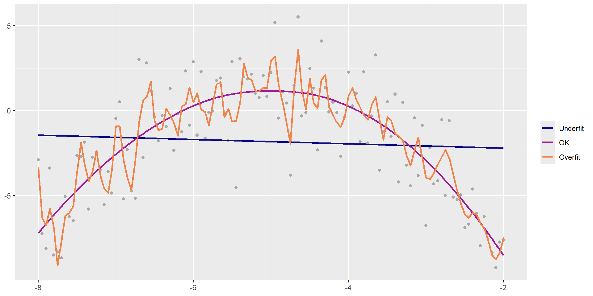
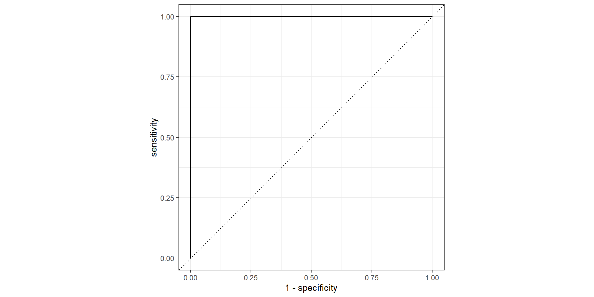

08 - Modélisation - Classification
PRO1036 - Analyse de données scientifiques en R
Tim Bollé
November 10, 2025
Classification
Problème avec la régression…
Cela fonctionne bien parce que nous avons une variable dépendante continue.
iris %>%
filter(Species != "setosa") %>%
ggplot(aes(x = Sepal.Length, y = Petal.Length)) +
geom_point() +
geom_smooth(method = "lm", color = "#E48957", se = FALSE) +
labs(
title = "Longueur des sépales vs Longueur des pétales",
subtitle = "Iris versicolor et Iris virginica",
x = "Longueur des sépales (cm)",
y = "Longueur des pétales (cm)"
) +
theme_minimal()Mais si la variable dépendante est catégorielle ?

iris %>%
filter(Species != "setosa") %>%
mutate(
Species_num = if_else(Species == "versicolor", 0, 1) # conversion artificielle
) %>%
ggplot(aes(x = Petal.Length, y = Species_num)) +
geom_point(alpha = 0.7) +
geom_smooth(method = "lm", se = FALSE, color = "#D81B60") +
scale_y_continuous(
breaks = c(0, 1),
labels = c("versicolor", "virginica") # remettre les étiquettes
) +
labs(
title = "Exemple volontairement incorrect : droite de régression entre une catégorie et une variable continue",
x = "Longueur des pétales",
y = "Espèce (codée artificiellement)"
) +
theme_minimal()Pourquoi cela ne fonctionne pas ?
La variable dépendante est catégorielle (espèce de l’iris) et non continue.
Les valeurs prédites peuvent être en dehors des catégories possibles (par exemple, 0.5).
La relation entre la variable explicative et la variable dépendante n’est pas linéaire.
- \(Y\) ne suit pas une distribution normale.
Quelle solution ?
Prenons un peu de recul…
Les GML : Généralized Linear Models
Modèles linéaires généralisés
- La régression linéaire est un cas particulier des modèles linéaires généralisés (GLM).
- La variable dépendante suit une distribution normale.
\[Y \sim \mathcal{N}(\mu, \sigma^2)\] Notre modèle permet d’estimer \(\mu\) en fonction des variables explicatives.
\[Y \sim \mathcal{N}(\beta_0 + \beta_1 X_1 + ... + \beta_p X_p, \sigma^2)\]
Visuellement
Les GML: Une généralisation
Les GML permettent de modéliser des variables dépendantes qui suivent différentes distributions (binomiale, Poisson, etc.).
Les GML: Une généralisation
Un GLM suit trois composantes principales : 1. Distribution de la variable dépendante: Spécifie la distribution statistique de la variable dépendante (ex: binomiale pour des données catégorielles, Poisson pour des données de comptage). - Cela nous diras comment la variance de la variable dépendante est liée à sa moyenne.
Un prédicteur linéaire: Une combinaison linéaire des variables explicatives \(\eta = \beta_0 + \beta_1 X_1 + \cdots + \beta_p X_p\)
Fonction de lien: Relie la moyenne de la variable dépendante aux variables explicatives via une transformation spécifique.
\[g(\mu) = \eta = \beta_0 + \beta_1 X_1 + \cdots + \beta_p X_p\]
Mathématiquement…
On cherche à estimer une valeur moyenne \(\mu\) de la variable dépendante \(Y\) en fonction de variables \(X\) (\(E(Y|X)\)).
\[ E(Y|X) = \mu \]
Comme \(Y\) ne suit pas une distribution normale, on utilise une fonction de lien \(g\) pour relier \(\mu\) au prédicteur linéaire :
\[ g(\mu) = \beta_0 + \beta_1 X_1 + \cdots + \beta_p X_p \]
On a donc :
\[ E(Y|X) = \mu = g^{-1}(\beta_0 + \beta_1 X_1 + \cdots + \beta_p X_p) \]
La fonction de lien
La fonction de lien permet de transformer la moyenne de la variable dépendante pour qu’elle puisse être modélisée par une combinaison linéaire des variables explicatives. En effet, une combinaison linéaire \(\eta = \beta_0 + \beta_1 X_1 + \cdots + \beta_p X_p\) est généralement définie sur \(\mathbb{R}\) avec des valeurs pouvant aller de \(]-\infty;\infty+[\), contrairement à \(\mu\) qui ne peut pas toujours, dépendant de la loi que suit \(Y\)
Exemples de fonctions de lien courantes
- Lien logit (pour les données binomiales/catégorielles) \[ g(\mu) = \log\left(\frac{\mu}{1 - \mu}\right) \]
- Lien log (pour les données de comptage, Poisson) : \[ g(\mu) = \log(\mu) \]
- Lien identité (pour les données normales) : \[ g(\mu) = \mu \]
La regession logistique
Classification binaire
Nous avions vu que la régression linéaire n’était pas adaptée pour modéliser une variable dépendante catégorielle.

Une première manière de voir les choses !
Nous pouvons transformer notre formule de la regression linéaire pour représenter le fait d’appartenir à une classe (0) ou l’autre (1)
\[ Y = \begin{cases} 1, & \text{si } \omega X \ge b, \\ 0, & \text{sinon}. \end{cases} \] où \(Y\) est la variable dépendante binaire, \(X\) est la variable explicative et où \(\omega\) et \(b\) permettent de régler le seuil de décision et le sens de la décision (est-ce que la classe 0 est à gauche ou à droite du seuil.
On peut réécrire cela avec notre formulation linéaire \(\eta = \beta_1 X + \beta_0\), en posant \(\omega = \beta_1\) et \(b = \beta_0\)
\[ Y = \begin{cases} 1, & \text{si } \beta_1 X + \beta_0 \ge 0, \\ 0, & \text{sinon}. \end{cases} \]
Visuellement

Regression logistique
La fonctione paliée n’est pas idéale pour des raisons d’optimisation. De plus, on souhaite obtenir des probabilités de classe plutôt que des décisions binaires strictes.
La fonction sigmoïde (logistique) est une alternative lisse qui mappe toute valeur réelle à l’intervalle [0, 1], ce qui est parfait pour modéliser des probabilités.
\[ S(z) = \frac{1}{1 + e^{-z}} \] Avec notre prédicteur linéaire \(\eta = \beta_0 + \beta_1 X\), la régression logistique modélise la probabilité que \(Y = 1\) comme suit :
\[ P(Y = 1 | X) = S(\eta) = \frac{1}{1 + e^{-(\beta_0 + \beta_1 X)}} \]
Visuellement

Approche plus formelle…
La régression logistique est un type de modèle linéaire généralisé (GLM) adapté pour les variables dépendantes binaires.
Cela veut dire que notre variable dépendante \(Y\) suit une distribution binomiale : \[ Y \sim \text{Binomiale}(n=1, p) \]
où \(p\) est la probabilité que \(Y = 1\).
Approche plus formelle…
Nous cherchons à modéliser la probabilité \(p\) en fonction des variables explicatives via la fonction de lien logit :
\[ g(p) = \log\left(\frac{p}{1 - p}\right) = \beta_0 + \beta_1 X_1 + \cdots + \beta_p X_p \] où \(g(p)\) est la fonction de lien logit, qui transforme la probabilité \(p\) en une échelle linéaire.
En regardant l’inverse de la fonction de lien, on obtient la probabilité \(p\) :
\[ p = \frac{1}{1 + e^{-(\beta_0 + \beta_1 X_1 + \cdots + \beta_p X_p)}} \]
En pratique
Modélisation
# Data
iris_filtered <- iris %>%
filter(Species != "setosa") %>%
mutate(Species = factor(Species))
logistic_model <- logistic_reg() %>%
set_engine("glm") %>% #Generalized Linear Model
fit(Species ~ Petal.Length, data = iris_filtered, family = binomial) # On indique que la loi est binomiale
tidy(logistic_model)# A tibble: 2 × 5
term estimate std.error statistic p.value
<chr> <dbl> <dbl> <dbl> <dbl>
1 (Intercept) -43.8 11.1 -3.94 0.0000812
2 Petal.Length 9.00 2.28 3.94 0.0000804Qualité du modèle
Pour mesurer la qualité du modèele, on ne peut pas utiliser le R² comme pour la régression linéaire. On utilise plutôt des métriques adaptées pour la classification binaire.
Table de confusion :
| Réel : Classe 0 | Réel : Classe 1 | |
|---|---|---|
| Prédit : Classe 0 | Vrai Négatif (TN) | Faux Négatif (FN) |
| Prédit : Classe 1 | Faux Positif (FP) | Vrai Positif (TP) |
Les Faux Positifs (FP) constituent des erreurs de type I, tandis que les Faux Négatifs (FN) représentent des erreurs de type II.
Qualité du modèle
Il est ensuite possible de calculer des métriques
Sensibilité : \(P(\hat{Y}=1 \mid Y=1) = \frac{TP}{TP + FN} = 1-FNR\)
Spécificité : \(P(\hat{Y}=0 \mid Y=0) = \frac{TN}{TN + FP} = 1-FPR\)
où \(FNR\) est le taux de faux négatifs et \(FPR\) le taux de faux positifs.
Prédiction
Faire des prédictions
Souvent on souhaite utiliser un modèle ajusté pour faire des prédictions sur de nouvelles données. On peut le faire en régression et en classification
Principe est simple:
- On met les valeurs des variables explicatives d’une nouvelle observation dans le modèle
- Le modèle calcule la valeur prédite de la variable dépendante
En pratique c’est un peu plus compliqué:
- Nous ne sommes pas sûrs que le modèle est bon
- Nous ne sommes pas sûrs que les nouvelles données sont similaires aux données d’entraînement
Underfitting et Overfitting

Séparation des données
Entraînement vs Test
- Jeu d’entraînement:
- Utilisé pour ajuster le modèle
- Majorité des données (généralement 80%)
- Jeu de test:
- Utilisé pour évaluer la performance du modèle ajusté
- Important de ne pas l’utiliser pendant l’ajustement du modèle
- Reste des données (généralement 20%)
L’idée est de mesurer la performance du modèle sur des données que le modèle n’a jamais vues auparavant.
En pratique
# Il y a un tirage aléatoire dans la séparation des données
# En fixant un seed, on s'assure d'obtenir toujours la même séparation - Reproductibilité
set.seed(1116)
# Séparer les données en deux ensembles (80% entraînement, 20% test):
iris_split <- initial_split(iris_filtered, prop = 0.80)
# Création des jeux d'entraînement et de test
train_data <- training(iris_split)
test_data <- testing(iris_split)Ce que ça donne
Rows: 80
Columns: 5
$ Sepal.Length <dbl> 6.3, 7.7, 7.2, 6.1, 6.9, 5.5, 6.0, 6.3, 5.6, 6.3, 7.7, 5.…
$ Sepal.Width <dbl> 3.4, 2.8, 3.2, 2.8, 3.1, 2.6, 2.2, 2.5, 3.0, 2.8, 2.6, 3.…
$ Petal.Length <dbl> 5.6, 6.7, 6.0, 4.0, 5.1, 4.4, 4.0, 4.9, 4.5, 5.1, 6.9, 4.…
$ Petal.Width <dbl> 2.4, 2.0, 1.8, 1.3, 2.3, 1.2, 1.0, 1.5, 1.5, 1.5, 2.3, 1.…
$ Species <fct> virginica, virginica, virginica, versicolor, virginica, v…Rows: 20
Columns: 5
$ Sepal.Length <dbl> 7.0, 6.9, 5.5, 5.7, 6.3, 6.6, 6.1, 6.7, 5.4, 6.0, 5.6, 5.…
$ Sepal.Width <dbl> 3.2, 3.1, 2.3, 2.8, 3.3, 2.9, 2.9, 3.1, 3.0, 3.4, 2.7, 2.…
$ Petal.Length <dbl> 4.7, 4.9, 4.0, 4.5, 4.7, 4.6, 4.7, 4.4, 4.5, 4.5, 4.2, 3.…
$ Petal.Width <dbl> 1.4, 1.5, 1.3, 1.3, 1.6, 1.3, 1.4, 1.4, 1.5, 1.6, 1.3, 1.…
$ Species <fct> versicolor, versicolor, versicolor, versicolor, versicolo…Entraînement du modèle
iris_fit <- logistic_reg() %>%
set_engine("glm") %>%
fit(Species ~ . , data = train_data, family = binomial) # on utilise toutes les variables explicatives
tidy(iris_fit)# A tibble: 5 × 5
term estimate std.error statistic p.value
<chr> <dbl> <dbl> <dbl> <dbl>
1 (Intercept) -41.9 26.3 -1.59 0.111
2 Sepal.Length -2.46 2.39 -1.03 0.303
3 Sepal.Width -6.56 4.58 -1.43 0.152
4 Petal.Length 9.31 4.80 1.94 0.0521
5 Petal.Width 18.0 10.0 1.80 0.0726Prédictions sur le jeu de test
# A tibble: 20 × 1
.pred_class
<fct>
1 versicolor
2 versicolor
3 versicolor
4 versicolor
5 versicolor
6 versicolor
7 versicolor
8 versicolor
9 versicolor
10 versicolor
11 versicolor
12 versicolor
13 versicolor
14 virginica
15 virginica
16 virginica
17 virginica
18 virginica
19 virginica
20 virginica Prédictions avec probabilités
iris_pred <- predict(iris_fit, test_data, type = "prob") %>%
bind_cols(test_data %>% select(Species))
iris_pred# A tibble: 20 × 3
.pred_versicolor .pred_virginica Species
<dbl> <dbl> <fct>
1 1.000e+ 0 1.36 e- 5 versicolor
2 9.99 e- 1 1.31 e- 3 versicolor
3 1.000e+ 0 4.94 e- 5 versicolor
4 1.000e+ 0 1.19 e- 4 versicolor
5 9.99 e- 1 1.45 e- 3 versicolor
6 1.000e+ 0 1.71 e- 5 versicolor
7 9.99 e- 1 8.98 e- 4 versicolor
8 1.000e+ 0 3.37 e- 6 versicolor
9 9.98 e- 1 2.45 e- 3 versicolor
10 1.000e+ 0 2.45 e- 4 versicolor
11 1.000e+ 0 1.80 e- 5 versicolor
12 1.000e+ 0 8.79 e-11 versicolor
13 1.000e+ 0 2.87 e- 6 versicolor
14 3.52 e-10 1.000e+ 0 virginica
15 1.20 e- 6 1.000e+ 0 virginica
16 2.90 e- 4 1.000e+ 0 virginica
17 3.76 e- 5 1.000e+ 0 virginica
18 2.49 e- 3 9.98 e- 1 virginica
19 6.37 e- 8 1.000e+ 0 virginica
20 1.12 e- 3 9.99 e- 1 virginica matrices de confusion
cm <- predict(iris_fit, test_data) %>%
bind_cols(test_data %>% select(Species)) %>%
conf_mat(truth = Species, estimate = .pred_class)
cm Truth
Prediction versicolor virginica
versicolor 13 0
virginica 0 7Le tableau rendu par la fonction predict dépend de si on souhaite avoir la classe prédite ou bien la probabilité pour chaque classe (type = "prob").
Selon ce que l’on souhaite faire après, il faut utiliser l’une ou l’autre.
Comparaison
Courbes ROC
Les Courbes ROC (Receiver Operating Characteristic) sont utilisées pour évaluer la performance des modèles de classification binaire de manière visuelle en représentant le taux de vrais positifs (sensibilité) en fonction du taux de faux positifs (1-spécificté)

Courbes ROC - Comparaison
Références

PRO1036 - 08 | Tim Bollé